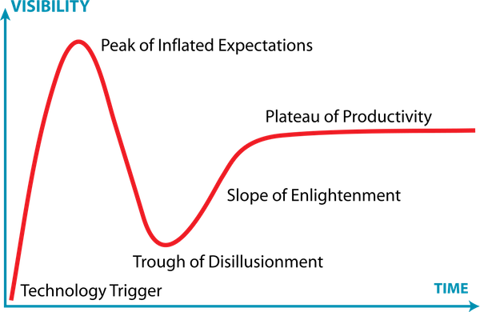

2018年1月。名义上的上一期是11月，原本存着给12月那份的内容被融入到年度报告里了，所以12月的就消失了。。
注：过去的1月真是波澜壮阔😳😳😳。
意义
我突然意识到，对于那些本身没有足够热情的事物来说，「因为对自己长期有益而去做」是远远比不过「愿意为了他人而去做」所能带来的动力的！
《活出生命的意义》一书中讲过这么一个例子：
在老伴去世两年多之后，老大爷依旧很伤心，依旧无法接受妻子的死亡。作为心理医生的主角问他：如果是你先她而去，那会怎么样？老大爷说那她可就受苦了，她怎么受得了啊。心理医生马上回答：所以你替代了她的痛苦，代价是你现在还活着，并且陷入了深深的痛苦中。老大爷没再说话。
书中举这个例子是为了说明，一旦找到了意义，痛苦就不再是痛苦。我曾经只把这本书当做规劝寻找人生目标的一本小册子，现在看来，它完全能够、甚至更加适合作为如何与现实妥协的一套方法论。🤔
04/06/2018: 果然，边界效应递减的作用是普世的，最终还是需要有内生性的动力，或者干脆趁着有动力的时候养成习惯。
完美主义&强迫症
- 很多书我翻开之后是一定要看完的，就算快速翻也要看完，不然就是不舒服；
- 很多代码我是一定要即时快速重构的，不然就是不舒服；
- 很多 paper 我是一定要建一篇单独的笔记记录下来、加到索引里的，不然就是不舒服。
以前我觉得正是这种完美主义+半强迫症的行为模式使我能走到今天。但不得不说，它已经不适合时代需求了。。。。当行政成本占据了大部分时间的时候，（早就）是时候重构了。
1月某一天，在放下了「每篇 paper 都至少稍微做点一下笔记吧」的心结之后，世界轻松了很多😄。我（再一次）开始做减法，毕竟现在有更重要的事和人要专注。
我把几年来维护的书单做了个大清理。以前那些买了就再也没看、现在感觉也也不想再看的书，都被从 Kindle 的内容库里删掉了，以后如果要看就再买一次呗。这样清除了估计100多本在读、想读。
对于那些未曾在书单里留下只言片语解释当初为啥要看的书、或者那些模棱两可还要不要看的书，我通过听解说的方式进行快速解了然后做出了判断。去年我对30min听完一本书这种模式还嗤之以鼻，现在居然也缓和观点了。其实还是取决于定位，如果它被用作深入了解某本书的唯一渠道，那么显然是呵呵哒。但我觉得它在预筛选、简要导航方面的潜力是不能被一语带过的。
- 关于这点我想多说两句，我的这些看法都是因人而异的，比如我自认为看的书不算少，我的痛点主要在于书单越攒越多看不完，需要做减法精简，所以我更关注的是其预筛选的功能。它并不是作为一个 input channel, 而是作为一个 filtering function. 我就是这么安慰自己的。
去年我表达过对于知识付费产品（特指得到）的喜爱，现在我变了，或者说我把它更加当成召之即来挥之即去的工具了。它呢产品是个好产品，特别是在同行的衬托之下，里头的内容呢也使我受益匪浅。但我越来越感到碎片时间的可贵，留给思维发散足够的碎片时间，惊喜才会降临！🙏
我感觉我的态度变化就像 Gartner Hype Cycle 一样：

——已经过了 disillusionment 阶段了，正在真正走上 slope of enlightenment😂。